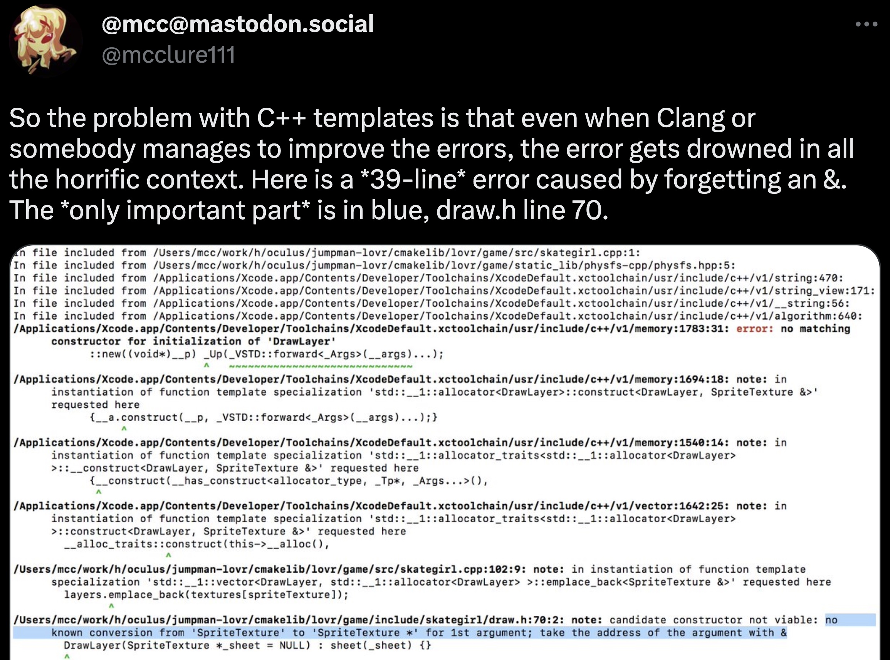

Definition Checked Generics
The Why and the How (Part 1)
Chandler Carruth
CppNow 2023
We’re part of the Carbon team, here today to talk to you about
definition-checked generics.
Part 1 of “the why and how”: Chandler and Josh talk about “the why”
Part 2: Josh and Richard talk about “the how”
The why of checked generics
This is far from the first attempt to motivate checked generics, but I’d like to
go back over the core motivation and maybe showcase it a bit more directly to
help folks understand.
What are checked generics?
Fully type-checking the generic definition
or
A finite set of constraints on the generic parameters that are both necessary
and sufficient to guarantee successful instantiation.
Let’s start with C++20 constrained templates
Let’s begin with the status quo, where C++ is today: C++20’s constrained
templates using concepts.
C++20 constrained templates use concepts
Fundamentally based around assertions of expression validity
The expressions, as given, must be valid
Doesn’t specify their semantics when valid
Still rely on instantiation for semantics
That’s when we can fully type check
Let’s try to definition check with these
template<typename D>
concept Display = requires(D &d, std::string_view sv) {
`<1>d.Show(sv)`;
};
template<Display D> void hello(D &d) {
`<2>d.Show("Hello, world!"sv)`;
}
Let’s start simple. We have a concept, it says that an expression must be valid.
And in fact, that is the expression used in the template, so when the concept is
satisfied, the instantiation will succeed. Yay!
template<typename D>
concept Display = requires(D &d, std::string_view sv) {
d.Show(sv);
};
template<Display D> void hello(D &d, std::string name = "world") {
d.Show("Hello, " + name + "!");
}
struct FormattedText {
FormattedText(std::string_view);
};
struct MyDisplay {
void Show(FormattedText text);
};
void test(MyDisplay &d, std::string_view sv) {
// ✅: This is fine, so concept is satisfied!
d.Show(sv);
// ❌: This doesn't work though!
hello(d);
}
But the code might be a bit more complex. Beyond the expression being valid, it
might be used in a context that will require some implicit conversions.
template<typename T> struct ConvertsTo {
operator T();
};
template<typename D>
concept Display = requires(D &d, std::string_view sv1,
ConvertsTo<std::string_view> sv2) {
`<1>d.Show(sv1)`;
`<0>d.Show(sv2)`;
};
This is fixable though, we can add the implicit conversions to what is required
in the concept.
We still need to constrain that the function accepts the original type,
otherwise this might only work when given types that are not
std::string_view.
And this isn’t enough…
template<typename T> struct ConvertsTo {
operator T();
};
template<typename D>
concept Display = requires(D &d, std::string_view sv1,
ConvertsTo<std::string_view> sv2,
`<2>const std::string_view sv3`) {
d.Show(sv1);
d.Show(sv2);
`<1>d.Show(std::move(sv1))`;
`<2>d.Show(sv3)`;
`<3>d.Show(std::move(sv3))`;
};
We also don’t want this call to fail when given a const string_view lvalue,
rvalue, or a non-const string_view rvalue.
But it is starting to get … very complex. We’re having to encode a lot of
information into the concept… And sadly, we’re far from done.
`<4>int` `<3>ScaleTime`(int time);
double ScaleTime(float time);
double ScaleTime(double time);
void RecordTime(`<5>double &time`);
template<Display D> void hello(D &d, std::string name = "world") {
`<4>auto` time = `<3>ScaleTime`(d.Show("Hello, " + name + "!"));
RecordTime(`<5>time`);
}
struct BadDisplay {
`<2>double` Show(std::string_view);
// Custom version.
`<2>int` Show(`<1>std::string`);
};
There might be a more specific overload that intercepts the implicit conversion.
And this might not be a problem immediately. Instead, it just changes the return
type. And that return type might also be fine, but be used as argument to
another overloaded function. And the result of that might be locally fine, but
initialize an auto variable that then later on is used in a way that doesn’t
support one particular type.
To build a concept that accurately rejects BadDisplay is really hard at this
point without baking the exact contents of the body of hello into it, and
essentially enumerating the type system of that function.
This is rapidly becoming a transcription of the actual type system into the
constraint.
And that’s actually the point.
Definition checking C++20 concepts is infeasible , not impossible
Requires building up a set of expression validity tests that fully subsume
every step of type checking the definition
Essentially, an observational record of the result of type checking
In essence, builds a new type system in the constraint
But rather than expressed directly, expressed through indirect assertions
that must cover every case
It’s not that it is physically impossible to put sufficient constraints into a
C++20 concept to type check, it’s that it is somewhat working backwards. We have
to in essence transcribe all of the effects of type checking into the set of
valid expressions.
Rather than describing a type system directly, we describe it indirectly,
through a set of indirect assertions or observations about it. And then we are
forced to ensure this set of assertions covers every degree of freedom.
Why is type checking generic definitions useful?
Ok, so we’ve sketched out what it means to check a generic definition – it
means establishing a proper type system for the generic itself and doing type
checking for it. And while in theory that may be possible with C++20 concepts,
its not easy.
But why do we need this?
What does type checking a generic definition really give us in a language?
Better error messages?

Better error messages?
Example from the original Concepts Lite paper:
list<int> lst = ...;
sort(lst); // Error
error: no matching function for call to ‘sort(list<int>&)’
sort(l);
^
note: candidate is:
note: template<Sortable T> void sort(T)
void sort(T t) { }
^
note: template constraints not satisfied because
note: ‘T’ is not a/an ‘Sortable’ type [with T = list<int>] since
note: ‘declval<T>()[n]’ is not valid syntax
Better error messages?
Concrete outline of how to use concepts: https://wg21.link/p2429
Important benefit is diagnosing a failed constraint, which works
Many other aspects of error messages important to improve
Lots more to do on error messages ,
Definition checking helps you get the errors
Changes how to develop generic code
Zero gaps – if the definition type checks, it’s right
No action-at-a-distance or surprise breakage for users of a template
Enables substantially more aggressive evolution of generic code
No futile attempt to cover every instantiation in unit tests
Or updating the endless tests when you change something
Is static typing useful?IMO, yes: shifting-left & large-scale refactoring
Checked generics give static typing benefitsgeneric software.
How many folks think that static typing is good and useful?
(If there is time, an aside…) How many folks think that there is clear and
conclusive evidence to support the idea that static is better than dynamic
typing?
:raise hand:
Well, I do have some bad news for you: there doesn’t seem to be much credible
research to empirically support this position: https://danluu.com/empirical-pl/
(end of aside)
Maybe ask this in a more simple way – does it seem like a useful tool to you?
IMO, yes. Maybe we don’t have empirical data at this stage, but I think both the
shifting-left of our detection of an error in software, and the enabling of
large-scale refactorings are key benefits of static, strong typing. Here,
“shifting left” means moving the point of detection earlier in the lifecycle of
software development.
And that’s also why I want checked generics. They provide static type for
large-scale generic software.
I say “large-scale” here because I think that is actually essential to observe
this. Within a small scope or scale, it is easy to compile literally everything
– every generic and every user of the generic. And when you do, its hard to see
any difference here. But for large scale software, whether its just too big to
compile everything, or if you’re just publishing a library to an unbounded (and
thus likely large) set of users you may never meet, either way I think you
essentially lose all ability to have a statically typed development experience
with generic code unless you have checked generics.
Complete definition checking unlocks type erasure
Type erasure is a powerful missing abstractions
C++ dynamic dispatch tools don’t address the needs:
Inheritance is a closed extension space, not open
Inheritance creates composition problems with diamond dependencies
Templates can compose and are an open extension space
But they don’t form a meaningful abstraction boundary
Type-checked definitions also improve implementation options
Avoid repeated type checking during instantiation
Avoid silently generating ODR-violations
Reduce (but not eliminate) the generation duplicated code
OK, hopefully this has helped motivate all of you to desperately want this
feature in your programming languages.
And hopefully not bored too much the folks in the audience who taught me all
of this years ago to get me interested in checked generics. (By the way,
thanks!)
But all of these benefits are just the very, well, generic benefits we would
expect.
Checked generics can also improve the foundations of the language
There are also dramatic ways that having checked generics in a language can
impact and influence the foundations of the language design. They can make it
more cohesive, powerful, and more composable.
But to dig into this, we’ll need to understand how generics work in some
detail. So let me hand things over to my friend Josh who is going to walk us
through a crash course in how checked generics work in a number of languages,
and especially Carbon where we’ve been exploring how to realize as many of these
benefits as possible.
What do checked generics look like in practice?
Generic means “parameterized”
Includes template generics and checked generics
Generic parameters are supplied at compile time
Often the parameters are types, or can only be types
When I say the word “generic” I mean adding parameterization to language
constructs; and that includes both template and checked parameters
The parameter to the generic, or “generic parameter”, will be known at compile
time, at least for all the high-performance relatively static languages I’m
going to talk about today.
Generally those parameters will be types, and some languages don’t even
support non-type generic parameters.
For comparison, what do template generics with C++20 concepts look like?
Lets start with C++ templates and concepts you are more likely to be familiar
with.
C++ example: defining a concept
#include <concepts>
template<typename T>
concept `RNGConcept` = requires(T a) {
{ `a.random()` } -> std::same_as<typename `T::result_t`>;
};
class BaseRNGClass { ... };
class FancyRNG : public BaseRNGClass {
public:
typedef double result_t;
auto random() -> double { ... }
};
template<RNGConcept T>
auto GenericFunction(T r) -> T::result_t {
return r.random();
}
auto CallsGeneric(FancyRNG r) -> double {
return GenericFunction(r);
}
This will be a running example, where I will show things first using C++
concepts, and later show how the analogous constructs look in some languages
with checked generics.
It is using a concept called <click> RNGConcept
that requires <click> the type has a method named random
with return type <click> equal to a member type named result_t
Of course, since this is just about expression validity, it could be satisfied
by having a field with a callable functor type instead of a method
C++ example: a type implementing the concept
#include <concepts>
template<typename T>
concept RNGConcept = requires(T a) {
{ a.random() } -> std::same_as<typename T::result_t>;
};
class BaseRNGClass { ... };
class FancyRNG : public BaseRNGClass {
public:
`<1>typedef double result_t`;
auto `<0>random() -> double` { ... }
};
template<RNGConcept T>
auto GenericFunction(T r) -> T::result_t {
return r.random();
}
auto CallsGeneric(FancyRNG r) -> double {
return GenericFunction(r);
}
The type FancyRNG satisfies the RNGConcept
<click> since it has a matching random method<click> and member type result_t
C++ example: a generic function
#include <concepts>
template<typename T>
concept RNGConcept = requires(T a) {
{ a.random() } -> std::same_as<typename T::result_t>;
};
class BaseRNGClass { ... };
class FancyRNG : public BaseRNGClass {
public:
typedef double result_t;
auto random() -> double { ... }
};
template<`<1>RNGConcept` T>
auto `<0>GenericFunction(T r)` -> T::result_t {
return r.random();
}
auto CallsGeneric(FancyRNG r) -> double {
return GenericFunction(r);
}
<click> GenericFunction can be called with <click> any type that
satisfies RNGConcept
C++ example: calling a generic function
#include <concepts>
template<typename T>
concept RNGConcept = requires(T a) {
{ a.random() } -> std::same_as<typename T::result_t>;
};
class BaseRNGClass { ... };
class FancyRNG : public BaseRNGClass {
public:
typedef double result_t;
auto random() -> double { ... }
};
template<RNGConcept T>
auto GenericFunction(T r) -> T::result_t {
return r.random();
}
auto CallsGeneric(FancyRNG r) -> double {
return GenericFunction(r);
}
Calling a generic function looks like calling any other function
As long as the type parameters can be deduced from the types of the
arguments
Since this is templates, this is both where the compiler checks that <click>
FancyRNG satisfies the RNGConcept concept, and <click> where
GenericFunction is type checked for the first time.
Languages with checked generics are going to have similar facilities
Now switching to languages with checked generics, they are going to have
analogous language constructs.
Generic functions
Generic parameters are used in the signature
template<RNGConcept `<0>T`>
auto GenericFunction(`<0>T` r) -> `<0>T`::result_t {
return r.random();
}
They will support generic functions with <click> parameters that can affect
argument or return types
Generic types
Often the generic parameters are listed explicitly when naming the type
(vector<int>)
The generic parameters are used in the method signatures and field types
They will support generic types. More commonly the values of the generic
arguments will be written explicitly as in vector<int>
but like C++’s class template argument deduction, some languages support
omitting them when they can be deduced
The use of those parameters in method signatures and field types will be much
the same as in C++
Checked constrained template<`RNGConcept` T>
auto GenericFunction(T r) -> T::result_t {
return r.random();
}
Can have constraints without fully typechecking
C++20 concepts
The constraints define the minimum provided by the caller
But can’t have typechecking without the constraints
The constraints define the maximum the callee can rely on
Using anything else is a type error in the definition
The big difference with checked generics is the role constraints play.
With unchecked generics, constraints can just be used to specify what the
caller has to provide.
<click> For example, a C++20 concept can be used as a constraint on a
template parameterThis is an add-on though, C++ has had templates for much longer than concepts.
But for checked generics, typechecking the body of a function depends on
the constraint to say what operations are allowed to be used with that type.
Interfaces
The building blocks of constraints
C++ Swift Rust Carbon
C++20 concept
protocol
trait
interface
template<typename T>
concept RNGConcept = requires(T a) {
{ a.random() } -> std::same_as<typename T::result_t>;
};
Two approaches: structural and nominal
Since constraints are so important to checked generics, the building blocks
for constraints also play a larger role.
These are the analog of C++20 concepts for checked generics, which Swift calls
“protocols”, Rust calls “traits”, and Carbon calls “interfaces”
There are two different approaches here, called structural and nominal. The
difference is in how
Structural interfaces
If you have these methods, with these signatures, then you satisfy this
interface
C++ concepts are an extreme version of structural
specified code has to somehow be valid
Structural means a type matching an interface is implicit, based on having the
expected set of members.
C++ concepts goes all the way to duck typing
Nominal interfaces
There is an explicit statement – by name – that a type satisfies a requirement
In C++, inheriting from a base class works nominally. A class having the
methods of another class is not enough to cast a pointer between the two
types.
In some languages, the implementation of an interface for a type is a separate
definition.
Nominal means explicit. Well, nominal really means named. In languages with
nominal interfaces, there is some form of explicit declaration using names.
This is like base classes in C++ – you have to mention the base class in the
class declaration otherwise you can’t convert pointers between those types.
Sometimes this explicit implementation statement is part of the class
declaration, like a base class; for other languages it is a separate
“implementation” declaration.
In addition to methods, interfaces can also contain types <click>
Associated types
#include <concepts>
template<typename T>
concept RNGConcept = requires(T a) {
{ a.random() } -> std::same_as<typename `<0>T::result_t`>;
};
class BaseRNGClass { ... };
class FancyRNG : public BaseRNGClass {
public:
typedef double `<0>result_t`;
auto random() -> double { ... }
};
<click> result_t is the analog of an associated type
Associated types
Associated types are types that an interface implementation must define
for example: value_type and iterator of C++ containers
allow the signature of methods in the interface to vary
Associated types have their own constraints
If the iterator associated type has constraint ForwardIterator, then a
generic function using an iterator can only use the methods of
ForwardIterator
A generic function might only accept containers if the associated type
value_type is String, or if it implements Printable
Just like the implementation of an interface provides methods defining
behavior, the implementation can also provide the types that appear in the
signatures of those methods.
Think of how every C++ container has value_type and iterator member types
that are used in the front() and begin() methods
<click> In order to typecheck uses of those methods, we need to give those
associated types constraints.So if a generic function calls begin() on the container, it is going to get
an iterator, but the only things that can be done with that iterator are the
methods defined by the constraint on the iterator associated type.
If that constraint is that it is a ForwardIterator, only those methods
defined in ForwardIterator may be used.
If a generic function wants to do more, it can impose additional constraints
on the associated types.
Again, checking generic code is reliant on the type information that the
constraints give you.
Generic interfaces
Some languages allow interfaces to be parameterized as well
template<typename T, `typename U`>
concept Pow = requires(T a, U b) {
{ a.pow(b) } -> std::same_as<typename T::result_t>;
};
template<Pow`<int>` T>
auto GenericFunction(T r) -> T::result_t {
return r.pow(2);
}
We can also parameterize interfaces
C++ concepts supports adding a type parameter, like this Pow example that
has <click> a type parameter representing the method’s parameter type.
Seen here in both the concept definiton and <click> its use as a constraint
Generic interfaces
Some languages allow interfaces to be parameterized as well
Pow<T>: type can be raised to a power of type Tvery useful for representing operator overloading
Allows a type to implement an interface multiple times
Pow<unsigned> and Pow<float> are different
Interface parameters are inputs
they have to be specified when naming an interface
Associated types are outputs
they are determined by the implementation selected
By parameterizing an interface, you allow a type to implement it multiple
times, with different argument values.
An interface parameter is an input: you can tell since you have to pass a
value in the argument list.
The values of the interface parameters determine the implementation
and the implementation determines the associated types
So Pow<unsigned> and Pow<float> might have different result types
template<`<0>typename T`, typename U>
concept Pow = requires(`<0>T a`, U b) {
{ a.pow(b) } -> std::same_as<typename T::result_t>;
};
The first input type parameter is often called the Self type , and is often
implicit
Gives expressivity beyond pure inheritance
Wait a minute!
In that Pow concept, there were two type parameters.
<click> The first parameter represents the type being constrained.In C++, it is implicit at the use site, but in other languages it isn’t even
listed in the parameter list.
It allows you to express signatures beyond what a base class can do.
For example: binary operations on a type, such as “comparison to self” or “add
with self”
Generic implementations
This family of types implements this interface
Or this interface with a range of arguments
Can express language mechanisms that are often hard-coded in languages without
generics
Some languages, such as C++ support specialization
When two implementations apply, use the more specific one
More about specialization in part 2
Implementations may be parameterized as well, and this ends up being very
expressive.
For example, this could be used to implement the fallback behavior for
comparisons in C++20 in a library
Chandler will talk more about this later
What do checked generics look like?
in Swift
in Rust
in Carbon
I have looked most closely at Swift, Rust, and Carbon, so I’m going to show
you what checked generics look like in those languages.
C++20 concepts are only constraints on the caller
So templated function bodies are not “checked” until they are called
Can be used to select between overloads
C++20 concepts are generally structural
Types “satisfy” a concept if
certain expressions are valid, or
valid and have a specified type
A fit for there being multiple ways to make something valid
Example: operators (or begin/end) can be overloaded with methods or free
functions
Support for specialization
“Ad hoc”: nothing enforces that a specialization has the same API
However subsumption is nominal
Can only say this concept implies another concept if there is a direct, named
dependency
It is too hard to say whether “this expression is valid” implies “that
expression is valid”
C++ example: defining a concept
#include <concepts>
template<typename T>
concept RNGConcept = requires(T a) {
{ a.random() } -> std::same_as<typename T::result_t>;
};
class BaseRNGClass { ... };
class FancyRNG : public BaseRNGClass {
public:
typedef double result_t;
auto random() -> double { ... }
};
template<RNGConcept T>
auto GenericFunction(T r) -> T::result_t {
return r.random();
}
This is a C++ concept definition
C++ example: a type implementing the concept
#include <concepts>
template<typename T>
concept RNGConcept = requires(T a) {
{ a.random() } -> std::same_as<typename T::result_t>;
};
class BaseRNGClass { ... };
class FancyRNG `<1>: public BaseRNGClass` {
public:
typedef double result_t;
`<0>auto random() -> double` { ... }
};
template<RNGConcept T>
auto GenericFunction(T r) -> T::result_t {
return r.random();
}
C++ generics are structural, so there is nothing explicitly saying this type
satisfies the concept except that it <click> implements the relevant method
<Click> in contrast to inheriting from a base class
C++ example: a generic function
#include <concepts>
template<typename T>
concept RNGConcept = requires(T a) {
{ a.random() } -> std::same_as<typename T::result_t>;
};
class BaseRNGClass { ... };
class FancyRNG : public BaseRNGClass {
public:
typedef double result_t;
auto random() -> double { ... }
};
template<`RNGConcept` `T`>
auto GenericFunction(`T r`) -> T::result_t {
return r.random();
}
This is a definition of a generic function
<click> The name of the concept is used as a constraint callers have to
satisfy<click> T is the type parameter, it can be deduced from <click> the
function’s argument
Swift
Swift will be our first example of a language with checked generics.
Swift example: defining a protocol
protocol RNGProtocol {
`associatedtype Result`
`mutating func random() -> Result`
}
class BaseRNGClass { ... }
class FancyRNG: BaseRNGClass, RNGProtocol {
func random() -> Double { ... }
}
func GenericFunction<T: RNGProtocol>(_ r: inout T) -> T.Result {
return r.random()
}
Swift interfaces are called “protocols”
<click> Result is declared as an associated type<click> Notice how the method declaration in the protocol looks the same
as in the class. This is common in checked generics.
protocol `<0>RNGProtocol` {
associatedtype Result
mutating func `<2>random`() -> `<3>Result`
}
class `<1>BaseRNGClass` { ... }
class FancyRNG: `<1>BaseRNGClass`, `<0>RNGProtocol` {
func `<2>random`() -> `<3>Double` { ... }
}
func GenericFunction<T: RNGProtocol>(_ r: inout T) -> T.Result {
return r.random()
}
Protocols are nominal
<click> Protocols listed together with <click> the base classThough this is a
regret of Swift designer Jordan Rose
Would have preferred something more to distinguish these
<click> defines random member of RNGProtocolImplementation of a protocol is not separated from the implementation of the
rest of the type
As part of typechecking that FancyRNG conforms to the RNGProtocol
interface
<click> the compiler infers that the Result type has to be Double
Swift example: a generic function
protocol RNGProtocol {
associatedtype Result
mutating func random() -> Result
}
class BaseRNGClass { ... }
class FancyRNG: BaseRNGClass, RNGProtocol {
func random() -> Double { ... }
}
func GenericFunction<`T`: `RNGProtocol`>(_ r: inout T) -> `T.Result` {
return r.random()
}
<click> The type parameter and <click> the constraint on it are listed in
angle brackets
This constraint is used to fully type check the function definition, without
knowing the value of T from a call.
<click> The return type is an associated type
Some things Swift does not (yet) do
Checked generic variadics are a work in progress
No specialization
No parameterization of protocols
No overlapping conformances
No non-type generic parameters
(read slide)
These absenses are intentional, and reflect a focus on usability over
expressiveness in Swift’s checked generic system
Rust example: defining a trait
pub trait RNGTrait {
`type Result;`
`fn random(&mut self) -> Self::Result;`
}
pub struct BaseRNG { ... }
pub struct FancyRNG {
base: BaseRNG, // no inheritance
}
impl RNGTrait for FancyRNG {
type Result = f64;
fn random(&mut self) -> f64 { ... }
}
fn generic_function<T: RNGTrait>(r: &mut T) -> T::Result {
return r.random();
}
Rust interfaces are called “traits”
<click> This is an associated type declaration<click> And a mutating method declaration
Rust example: a type implementing to a trait
pub trait RNGTrait {
type Result;
fn random(&mut self) -> Self::Result;
}
pub struct BaseRNG { ... }
pub struct FancyRNG {
base: BaseRNG, // no inheritance
}
`impl RNGTrait for FancyRNG` {
type Result = f64;
`fn random(&mut self) -> f64` { ... }
}
fn generic_function<T: RNGTrait>(r: &mut T) -> T::Result {
return r.random();
}
Traits are nominal
<click> Implementations of traits are separate from the type and its
fields<click> All the methods in a trait implementation end up in the type’s
API
random ends up as part of FancyRNG’s API
Rust example: a generic function
pub trait RNGTrait {
type Result;
fn random(&mut self) -> Self::Result;
}
pub struct BaseRNG { ... }
pub struct FancyRNG {
base: BaseRNG, // no inheritance
}
impl RNGTrait for FancyRNG {
type Result = f64;
fn random(&mut self) -> f64 { ... }
}
fn generic_function<`T: RNGTrait`>(r: &mut T) -> `T::Result` {
return r.random();
}
Here is a generic function
<click> Generic type parameter declarations are in angle brackets<click> Returning the associated type
Rust has been adding some advanced features
Recent releases have added support for:
generic associated types
non-type parameters
called “const generics” in Rust
Rust focuses more heavily on the expressiveness of its generics system and has
recently added some advanced features.
Generic associated types, meaning parameterized associated types, are a bit
like when a C++ member type is itself parameterized like a templated member
Const generics in Rust are like non-type parameters in C++
Both of these features have been shipped in an early form and expect to be
developed further.
Some things Rust does not do
(read the slide)
Specialization is discussed more in part 2
Carbon
Lastly, I will show you how this example looks in Carbon.
Carbon example: defining an interface
interface RNGInterface {
`let Result: type;`
`fn Random[addr self: Self*]() -> Result;`
}
class BaseRNGClass { ... }
class FancyRNG {
extend base: BaseRNGClass;
extend impl as RNGInterface where .Result = f64 {
fn Random[addr self: Self*]() -> f64 { ... }
}
}
fn GenericFunction[T:! RNGInterface](r: T*) -> T.Result {
return r->Random();
}
This is an interface definition in Carbon
<click> Associated type declaration<click> Mutating method declaration
Carbon example: implementing an interface
interface RNGInterface {
let Result: type;
fn Random[addr self: Self*]() -> Result;
}
class BaseRNGClass { ... }
class FancyRNG {
`<1>extend` `<2>base: BaseRNGClass`;
`<1>extend` `<0>impl as RNGInterface` where .Result = f64 {
`<3>fn Random[addr self: Self*]() -> f64` { ... }
}
}
fn GenericFunction[T:! RNGInterface](r: T*) -> T.Result {
return r->Random();
}
Next I’ll show how interfaces are implemented for types.
Interfaces are nominal in Carbon
<click> A type implements an interface in a separate impl definition,
though unlike Rust it may appear in the class definition.<click> Name lookup is only into things mentioned in the class definition
using the extend keyword<click> It is used for inheritance and is optional for implementations<click> With the extend keyword, the Random function from the
RNGInterface is part of the class’ API
Carbon example: generic function
interface RNGInterface {
let Result: type;
fn Random[addr self: Self*]() -> Result;
}
class BaseRNGClass { ... }
class FancyRNG {
extend base: BaseRNGClass;
extend impl as RNGInterface where .Result = f64 {
fn Random[addr self: Self*]() -> f64 { ... }
}
}
fn GenericFunction`[T:! RNGInterface]``(r: T*)` -> T.Result {
return r->Random();
}
Here is a generic function
Type parameters in Carbon are either always deduced, <click> declared in
the square brackets, or never deduced, and <click> declared in the round
parens.
Carbon example: generic function
interface RNGInterface {
let Result: type;
fn Random[addr self: Self*]() -> Result;
}
class BaseRNGClass { ... }
class FancyRNG {
extend base: BaseRNGClass;
extend impl as RNGInterface where .Result = f64 {
fn Random[addr self: Self*]() -> f64 { ... }
}
}
fn GenericFunction[T`:!` RNGInterface](r: T*) -> `T.Result` {
return r->Random();
}
<click> The :! is what marks this parameter as a compile-time generic
parameter<click> and here it uses an associated type for the return type
Carbon
Supports checked and
Checked generics use nominal “interfaces”
Template generics work like C++ templates
Template generics may be constrained
They can call each other
Supports interface implementation specialization from the start
Supports checked-generic variadics
Is new ! Everything is a work in progress
benefiting from the experience of other languages
Don’t hurry this slide!
Carbon supports checked and
Checked generics use nominal “interfaces” as I just showed
Template generics work like C++ templates, directly instantiated on the type
may be constrained like C++20 concepts
They can call each other, in either direction
This is probably the biggest differentiator of Carbon
<click> Supports interface implementation specialization from the start
more about that in part 2
<click> Also checked-generic variadics<click> But of course Carbon is still very new and all of this is a work in
progressWe think that by learning from other languages that we can build an even
better generics system.
Better language foundations with checked generics
Now that we have the basics of how checked generics work across a number of
languages, let’s look at ways we think these can actually improve the
foundations of the programming language.
This is a key area we’ve been exploring in Carbon, because we knew it was
important to have checked generics and we wanted to work hard to get the most
out of that investment and lay the strongest foundation we could for the rest of
the language.
Unified and powerful customization points
First up, let’s look at how these can give the language powerful customization
points.
What are customization points?
class MyComplex { ... };
MyComplex `operator+`(MyComplex, MyComplex) { ... }
void `swap`(MyComplex, MyComplex) { ... }
void f(std::vector<MyComplex> vec) {
// Uses ``operator+`` customization point.
MyComplex avg = `std::accumulate`(vec.begin(), vec.end(),
MyComplex{})
/ vec.size();
// Uses ``swap`` customization point.
`std::partial_sort`(vec.begin(), vec.end(),
[&](MyComplex c) {
return c.real() < avg.real();
});
}
Long, complex history trying to get this right
ADL (Argument Dependent Lookup) of operators
Class template specialization
ADL-found functions with the weird using trick
Customization Point Objects
tag_invoke…
Many WG21 papers here, but can start with: http://wg21.link/p2279
Checked generics solve these problems
Operator overloading
interface `MulWith`(`U:! type`) {
`let Result:! type` `= Self`;
fn `Op`[self: Self](rhs: U) -> Result;
}
class Point {
var x: f64;
var y: f64;
impl as MulWith(f64) where .Result = Point {
fn Op[self: Self](scale: f64) -> Point {
return {.x = self.x * scale, .y = self.y * scale};
}
}
}
fn Double(p: Point) -> auto {
let scale: f64 = 2.0;
return p * scale;
// => p.(MulWith(typeof(scale)).Op)(scale)
// => p.(MulWith(f64).Op)(scale)
}
Rather than using ADL to find the right operator, we can use a dedicated
customization point mechanism that is designed specifically for doing things
like expressing how to apply an operation to a particular type.
And without ADL here, no need to deal with the brittle-ness of ADL or build the
customization point objects to defeat it.
Operator overloading
interface MulWith(U:! type) {
let Result:! type = Self;
fn Op[self: Self](rhs: U) -> Result;
}
class `Point` {
var x: f64;
var y: f64;
`impl as MulWith(f64)` where .Result = Point {
fn Op[self: Self](scale: f64) -> Point {
return {.x = self.x * scale, .y = self.y * scale};
}
}
}
fn Double(p: Point) -> auto {
let scale: f64 = 2.0;
return p * scale;
// => p.(MulWith(typeof(scale)).Op)(scale)
// => p.(MulWith(f64).Op)(scale)
}
Operator overloading
interface MulWith(U:! type) {
let Result:! type = Self;
fn Op[self: Self](rhs: U) -> Result;
}
class Point {
var x: f64;
var y: f64;
impl as MulWith(f64) `where .Result = Point` {
fn Op[self: Self](scale: f64) -> Point {
`return {.x = self.x * scale, .y = self.y * scale};`
}
}
}
fn Double(p: Point) -> auto {
let scale: f64 = 2.0;
return p * scale;
// => p.(MulWith(typeof(scale)).Op)(scale)
// => p.(MulWith(f64).Op)(scale)
}
Operator overloading
interface MulWith(U:! type) {
let Result:! type = Self;
fn Op[self: Self](rhs: U) -> Result;
}
class Point {
var x: f64;
var y: f64;
impl as MulWith(f64) where .Result = Point {
fn Op[self: Self](scale: f64) -> Point {
return {.x = self.x * scale, .y = self.y * scale};
}
}
}
fn Double(p: Point) -> auto {
let scale: f64 = 2.0;
return `p * scale`;
// => `p.(MulWith(typeof(scale)).Op)(scale)`
// => p.(MulWith(f64).Op)(scale)
}
Operator overloading
interface MulWith(U:! type) {
let Result:! type = Self;
fn Op[self: Self](rhs: U) -> Result;
}
class Point {
var x: f64;
var y: f64;
impl as MulWith(f64) where .Result = `<5>Point` {
fn `<2>Op`[self: Self](scale: f64) -> Point {
return {.x = self.x * scale, .y = self.y * scale};
}
}
}
fn Double(p: Point) -> `<5>auto` {
let scale: f64 = 2.0;
return p * `<1>scale`;
// => p.(MulWith(`<1>typeof(scale)`).Op)(scale)
// => `<3>p`.(`<2>MulWith(f64).Op`)(`<4>scale`)
}
Customizations with higher-level semantics
choice Ordering {
Less,
Equivalent,
Greater,
Incomparable
}
interface OrderedWith(U:! type) {
fn Compare[self: Self](u: U) -> Ordering;
}
fn StringLess(s1: String, s2: String) -> bool {
return s1 < s2;
// => s1.(OrderedWith(String).Compare)(s2) == Less
}
fn StringGreater(s1: String, s2: String) -> bool {
return s1 > s2;
// => s1.(OrderedWith(String).Compare)(s2) == Greater
}
We can also customize operators in a more semantic manner without issue, using
names and types to mark things. For example, we can define a type to model
possible orderings and an interface with a single compare function that returns
it, much like spaceship but with names that make it obvious how it interacts
with the type.
Customizations with higher-level semantics
choice Ordering {
Less,
Equivalent,
Greater,
Incomparable
}
interface OrderedWith(U:! type) {
fn Compare[self: Self](u: U) -> Ordering;
}
fn StringLess(s1: String, s2: String) -> bool {
return s1 `<2><` s2;
// => `<1>s1.(OrderedWith(String).Compare)(s2)` `<2>== Less`
}
fn StringGreater(s1: String, s2: String) -> bool {
return s1 `<3>>` s2;
// => `<1>s1.(OrderedWith(String).Compare)(s2)` `<3>== Greater`
}
Note: Carbon actually supports deeper customization,
motivated by C++ interop
And we can rewrite multiple different binary operators to use this single,
semantic model for what is going on, rather than having a separate, and
potentially inconsistent, customizations for each operator.
Incrementally extending & specializing customization points
interface OrderedWith(U:! type) {
fn Compare[self: Self](u: U) -> Ordering;
default fn Less[self: Self](u: U) -> bool {
return self.Compare(u) == Ordering.Less;
}
default fn LessOrEquivalent[self: Self](u: U) -> bool {
let c: Ordering = self.Compare(u);
return c == Ordering.Less or c == Ordering.Equivalent;
}
default fn Greater[self: Self](u: U) -> bool {
return self.Compare(u) == Ordering.Greater;
}
default fn GreaterOrEquivalent[self: Self](u: U) -> bool {
let c: Ordering = self.Compare(u);
return c == Ordering.Greater or c == Ordering.Equivalent;
}
}
Another advantage of the richer language construct powering things like the
customization points for operators is that they can support more complex use
cases.
For example, if we start with an interface like our OrderedWidth, there might
be types that would prefer a custom implementation of specific comparisons. And
we can actually change the interface to evolve it in a non-breaking way.
Incrementally extending & specializing customization points
interface OrderedWith(U:! type) {
fn Compare[self: Self](u: U) -> Ordering;
`<2>default` fn `<1>Less`[self: Self](u: U) -> bool {
`<3>return self.Compare(u) == Ordering.Less;`
}
default fn LessOrEquivalent[self: Self](u: U) -> bool {
let c: Ordering = self.Compare(u);
return c == Ordering.Less or c == Ordering.Equivalent;
}
default fn Greater[self: Self](u: U) -> bool {
return self.Compare(u) == Ordering.Greater;
}
default fn GreaterOrEquivalent[self: Self](u: U) -> bool {
let c: Ordering = self.Compare(u);
return c == Ordering.Greater or c == Ordering.Equivalent;
}
}
We can do this by adding more methods to the interface that types can implement
like Less. But in order to not break existing types, we use the default
keyword and provide a definition in terms of the original Compare. This allows
all the existing code to continue working, but subsequently begin to implement
these more nuanced APIs specially if that is desirable.
This technique both supports evolution, where the defaults are eventually
removed once all the users ave updated, as well as specializing when we want to
provide meaningful defaults that can be overridden when there is special
behavior.
Conditional, generic customization points
interface `Printable` {
fn `Print`[self: Self]();
}
class `Vector(template T:! type)` { ... }
impl `forall` [`T`:! `Printable`] `Vector(T)` as Printable {
fn Print[self: Self]() {
var first: bool = true;
for (elem: `T` in self) {
if (not first) { ", ".Print(); }
`elem.Print()`;
first = false;
}
}
}
And because we are building these on top of a generics system, you can build
generic versions that conditionally customize behavior.
Implicit conversions with customization pointsThe next foundational thing builds on the previous and the generic systems here:
we can base all of our implicit conversion support on top of these customization
points, rather than as separate language features.
No need to mix both conversion operators and implicit constructors, all of it
can be handled in one place.
We can even cleanly layer it with explicit conversions that can be modeled the
same way!
Explicit conversion customization point
interface `As`(`Dest:! type`) {
fn `Convert`[self: Self]() -> `Dest`;
}
`impl String as As`(`Path`) {
fn Convert[self: String]() -> Path {
return `Path.FromString`(self);
}
}
let config_file: Path = `"/etc/myutil.cfg" as Path`;
// => ("/etc/myutil.cfg").(`As(Path)`.`Convert`)()
Implicit conversion customization point
interface `ImplicitAs`(Dest:! type) {
`extends As(Dest)`;
// Inherited from As(Dest):
// fn `Convert`[self: Self]() -> Dest;
}
impl `String as ImplicitAs(StringView)` {
fn Convert[self: String]() -> StringView {
return StringView::Make(self.Data(), self.Data() + self.Size());
}
}
fn Greet(s: StringView) { Print("Hello, {0}", s); }
fn Main() -> i32 {
`Greet`(`"audience"`);
// => Greet(("audience").(`ImplicitAs(StringView)`.`Convert`)()
return 0;
}
Implicit conversion conditional defaults
impl `forall` [`U:! type`, `T:! As(U)`]
`Optional(T)` as `As(Optional(U))`;
impl forall [U:! type, T:! `ImplicitAs(U)`]
Optional(T) as ImplicitAs(Optional(U));
impl forall [T:! type]
`NullOpt` as `ImplicitAs(Optional(T))`;
We can now combine the other powerful features like conditional implementation
to provide conditional implicit conversions in expected places using generic
code.
And this gives us a huge amount of power. Because we’re modeling this with the
generics system, we can do things like have good defaults expressed with a
conditional implementation, and still allow specialization in cases where the
default isn’t actually right.
The point here is how much more powerful this unified model is because we built
it on the foundations of generics.
Fundamentally more expressive customization
The tools here are fundamentally more expressive. Let’s consider something
that we don’t have any good way of applying ADL or CPOs to: types !
This works! ✅
class `Base` {};
class `Derived` : public Base {};
void Test(`Base *b`);
void Example(bool condition) {
`Base b`;
`Derived d`;
// ✅
Test(`condition ? &b : &d`);
//...
}
This works in either direction! ✅
class Base {};
class Derived : public Base {};
void Test(Base *b);
void Example(bool condition) {
Base b;
Derived d;
// ✅✅
Test(condition ? &b : &d);
Test(`condition ? &d : &b`);
//...
}
But does this? 😞
class Base {};
class `DerivedA` : public Base {};
class `DerivedB` : public Base {};
void Test(Base *b);
void Example(bool condition) {
Base b;
`DerivedA da`;
`DerivedB db`;
// ✅✅
Test(condition ? &b : &db);
Test(condition ? &da : &b);
// ???
Test(`condition ? &da : &db`);
//...
}
❌ error: incompatible operand types (DerivedA * and DerivedB *)
Nope!
And we don’t even really have a way of fixing this in C++ because how do we
customize on this? It would be a customization point that doesn’t just take a
type as an input but produces it as an output?
I guess we could do something fairly tricky like have a function which if it
were called would return the common type, and then call it in an unevaluated
context, get the return type, and use that?
But … wow…
We can make this easy in Carbon
interface `CommonTypeWith`(`U:! type`) {
`let Result:! type`
`where` `Self impls ImplicitAs`(`.Self`) and
`U impls ImplicitAs`(`.Self`);
}
class `InternedString` { ... }
impl `InternedString` as `CommonTypeWith(String)`
where `.Result = StringView` {}
fn SelectString(condition: bool, s: String, i: InternedString) -> StringView {
// Carbon version of ``... ? ... : ...`` in C++:
return `if condition then s else i`;
}
Because the generics system works in types already, it is easy for us to select
a type in a customization point rather than calling a function.
Customizable CommonType opens even more doors
fn SelectLongString(s: String, i: InternedString, v: StringView) -> `auto` {
if (s.Size() > 20) {
`return s`;
} else if (i.Size() > 20) {
`return i`;
} else {
`return v`;
}
}
And once we have this more powerful common type model, we can even imagine
building still more on top of this. For example, we could use it to common the
types across different return statements when deducing a return type, etc.
This is another more powerful foundation we can build when we build on top of
generics.
Checked generics build better language foundations
These better foundations make generics better!
The point throughout, is that checked generics enable you to build significantly
better language foundations.
But it goes beyond that. When you build the foundations of the language on a
checked generics system, a strange thing happens. It gives you a better checked
generics system .
Foundations built with checked genericsavailable within checked generics
Every language foundation built on top of the checked generics system is just
trivially available within generic checked generic code.
Operator overloads in checked generic code
interface MulWith(U:! type) {
let Result:! type = Self;
fn Op[self: Self](rhs: U) -> Result;
}
class Point {
var x: f64;
var y: f64;
impl as MulWith(f64) where .Result = Point {
fn Op[self: Self](scale: f64) -> Point;
}
}
fn Double(p: Point) -> auto {
let scale: f64 = 2.0;
return p * scale;
// => p.(MulWith(f64).Op)(scale)
}
fn GenericDouble[T:! MulWith(f64)](x: T) -> auto {
let scale: f64 = 2.0;
return x * scale;
// => p.(MulWith(f64).Op)(scale)
}
Operator overloads in checked generic code
interface MulWith(U:! type) {
let Result:! type = Self;
fn Op[self: Self](rhs: U) -> Result;
}
class Point {
var x: f64;
var y: f64;
impl as MulWith(f64) where .Result = Point {
fn Op[self: Self](scale: f64) -> Point;
}
}
fn Double(p: Point) -> auto {
let scale: f64 = 2.0;
return p * scale;
// => p.(MulWith(f64).Op)(scale)
}
fn GenericDouble[`T:! MulWith(f64)`](`x: T`) -> auto {
let scale: f64 = 2.0;
return `x * scale`;
// => p.(MulWith(f64).Op)(scale)
}
Operator overloads in checked generic code
interface MulWith(U:! type) {
let `<5>Result`:! type = Self;
fn Op[self: Self](rhs: U) -> `<4>Result`;
}
class Point {
var x: f64;
var y: f64;
impl as MulWith(f64) where .Result = Point {
fn Op[self: Self](scale: f64) -> Point;
}
}
fn Double(p: Point) -> auto {
let scale: f64 = 2.0;
return p * scale;
// => p.(MulWith(f64).Op)(scale)
}
fn GenericDouble[T:! `<2>MulWith(f64)`](x: T) -> `<3>auto` {
let scale: f64 = 2.0;
return x * scale;
// => p.(`<1>MulWith(f64)`.Op)(scale)
}
How do you use an operator overload within a generic function? We literally
already have every tool needed. Because the foundation was built on this.
Same pattern provides generic implicit conversions, common types, etc.
Systematically generic language foundations ensure that generic code is just code
And if we do this systematically across the language, we’ll get something that
has been a long-standing goal of generic programming in C++ – we’ll get the
same language both in generics and outside. Code in a generic will just be
code . No separate rules or techniques needed, because all the foundations and
infrastructure your code relies on is always, intrinsically, built ready for use
in a generic.
Generic programming is better with checking
Better ergonomics
More reliably better ergonomics
Powerful abstraction tool when desired
Efficient implementation strategies
Entire language is better with foundations built on checked generics
Better customization mechanics throughout the language
Language constructs can be more easily customized
Enables clean interface composition
Generic programming becomes simpler as the language foundations are integrated
Increasingly erases the difference between non-generic and generic code.
Carbon is developing and exploring this area
What it looks like to build a checked generics system that interoperates with
C++?
How do we support template generic code?
How do we model specialization?
How can we more pervasively integrate it into the foundations of
the language?
Hope to share what we learn and our experience
Also would love to work with anyone interested in contributing to this space
Next up, a break and then part 2:
The how of checked generics
The next session will dive deeply into some specifically difficult aspects of
building a really powerful and robust checked-generics system. Again, we’ll be
covering C++, Swift, and Rust as well as sharing the approach we’ve ended up
with in Carbon